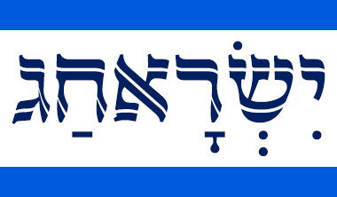

תחילתו של דף אינטרנט, לחצו אנטר כדי לעבור לתוכן המרכזי

בית
חגים ומועדים
חגים
ראש השנה
סוכות
חנוכה
ט"ו בשבט
פורים
פסח
יום העצמאות
יום ירושלים
שבועות
מועדים
צום גדליה
יום כיפור
שמחת תורה
צום עשרה בטבת
תענית אסתר
יום הזיכרון לשואה ולגבורה
יום הזיכרון לחללי מערכות ישראל
ל"ג בעומר
צום שבעה עשר בתמוז
צום תשעה באב
ט"ו באב
אודות
צור קשר
בית
חגים ומועדים
חג
מועד
ראש השנה
צום גדליה
יום הכיפורים
סוכות
שמחת תורה
חנוכה
עשרה בטבת
ט"ו בשבט
תענית אסתר
פורים
פסח
יום הזיכרון לשואה ולגבורה
יום הזיכרון לחללי מערכות ישראל
יום העצמאות
ל"ג בעומר
יום ירושלים
שבועות
שבעה עשר בתמוז
תשעה באב
ט"ו באב